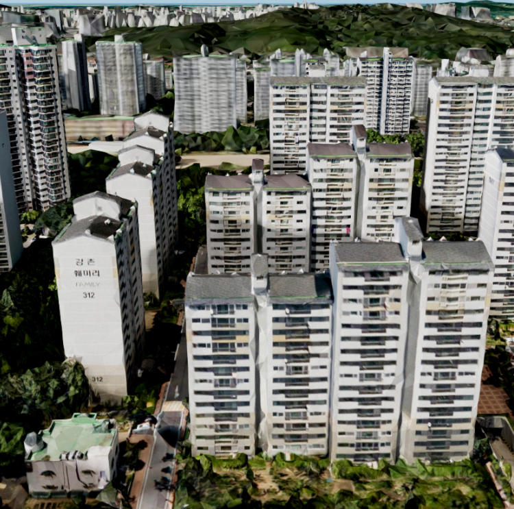
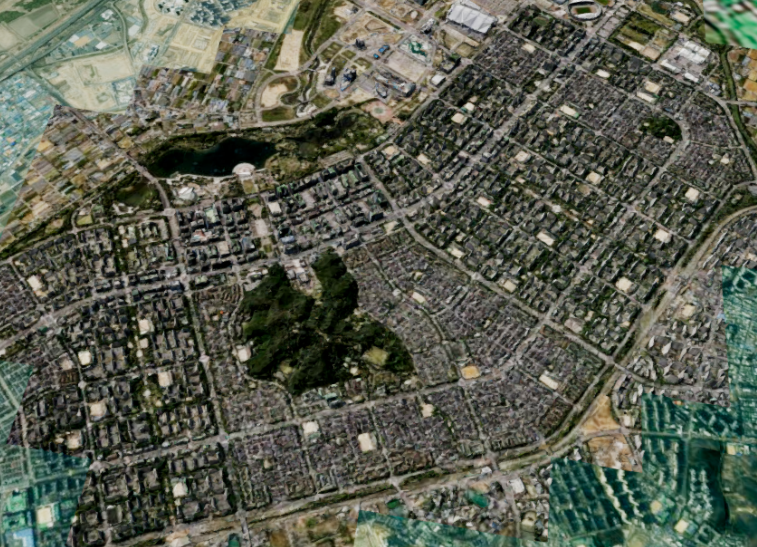
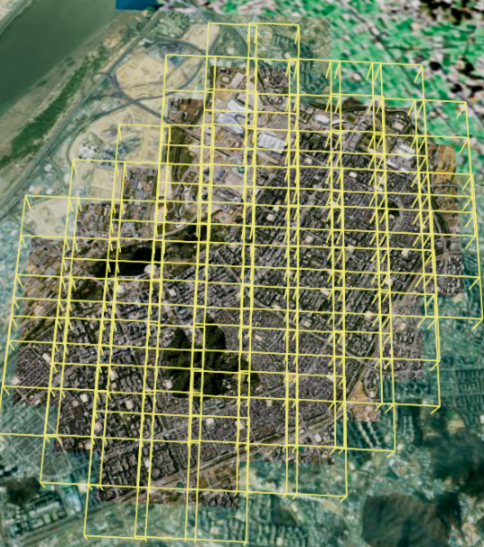
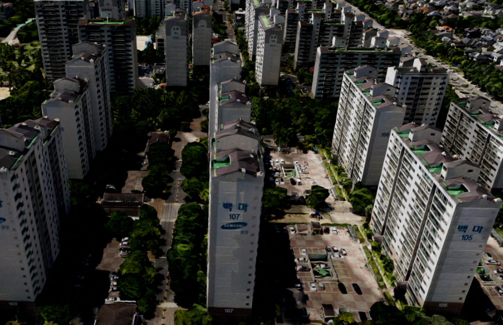
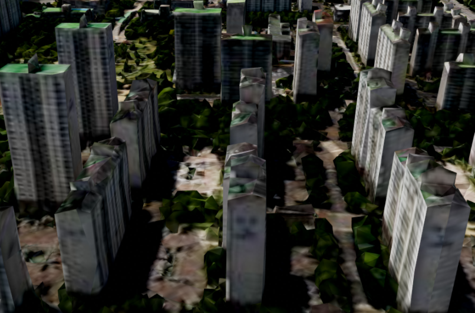

1. 3D Tiles 모델 레이어 시작하기
* 3D Tiles 모델 레이어는 3D Tiles 형식의 대용량 3D 모델(도시 전체, 실사 메쉬, BIM 등)을 지도 위에 출력하는 레이어입니다.
* 3D Tiles 는 거대한 3D 모델을 작은 타일 조각으로 나눠 전송하기 위한 국제 표준(OGC) 형식입니다.
* 동영상 스트리밍처럼 전체를 내려받지 않고 지금 보이는 부분부터 조금씩 받아 표시하며, 카메라 위치와 화면상 크기에 따라 필요한 타일만 단계별(LOD)로 로딩하므로 수 GB 이상의 모델도 부드럽게 볼 수 있습니다.
* 서버에 준비된 tileset.json 파일의 URL만 있으면 레이어를 생성할 수 있습니다.
* 3D Tiles 는 거대한 3D 모델을 작은 타일 조각으로 나눠 전송하기 위한 국제 표준(OGC) 형식입니다.
* 동영상 스트리밍처럼 전체를 내려받지 않고 지금 보이는 부분부터 조금씩 받아 표시하며, 카메라 위치와 화면상 크기에 따라 필요한 타일만 단계별(LOD)로 로딩하므로 수 GB 이상의 모델도 부드럽게 볼 수 있습니다.
* 서버에 준비된 tileset.json 파일의 URL만 있으면 레이어를 생성할 수 있습니다.
GeOnDT.model.U3dModelTilesLayer({opt});
opt.name
string : 레이어 이름 *필수 입력
opt.baseurl string : 3D Tiles 데이터(tileset.json) URL *필수 입력
opt.apikey string : 데이터 요청 시 사용할 API Key
opt.useproxy boolean : 프록시 사용 여부. 기본값 false
opt.proxyurl string : useproxy 가 true 일 때 사용할 프록시 URL
opt.heightOffset number : 높이 보정값 (m)
opt.rotation object : 회전 보정값 {x, y, z}. 단위는 도(°)
opt.autoHeight boolean : 지형 고도에 맞춰 자동으로 높이를 맞출지 여부. 기본값 false
opt.usebox boolean : 타일의 경계 상자(Bounding Box) 표시 여부. 기본값 false
opt.maximumScreenSpaceError number : 최대 화면 오차 허용치. 값이 작을수록 고품질·저성능. 기본값 20
opt.viewSizeOffset number || function : (고급) 화질·성능 미세조정 배율. 기본값 1
opt.type string : 데이터 종류 ('3dtiles' / '3dtiles_BIM'). 기본값 '3dtiles'
opt.baseurl string : 3D Tiles 데이터(tileset.json) URL *필수 입력
opt.apikey string : 데이터 요청 시 사용할 API Key
opt.useproxy boolean : 프록시 사용 여부. 기본값 false
opt.proxyurl string : useproxy 가 true 일 때 사용할 프록시 URL
opt.heightOffset number : 높이 보정값 (m)
opt.rotation object : 회전 보정값 {x, y, z}. 단위는 도(°)
opt.autoHeight boolean : 지형 고도에 맞춰 자동으로 높이를 맞출지 여부. 기본값 false
opt.usebox boolean : 타일의 경계 상자(Bounding Box) 표시 여부. 기본값 false
opt.maximumScreenSpaceError number : 최대 화면 오차 허용치. 값이 작을수록 고품질·저성능. 기본값 20
opt.viewSizeOffset number || function : (고급) 화질·성능 미세조정 배율. 기본값 1
opt.type string : 데이터 종류 ('3dtiles' / '3dtiles_BIM'). 기본값 '3dtiles'
* 생성한 레이어는 app.addLayer(layer) 로 앱에 등록한 뒤, app.showLayer(name, true) 로 가시화합니다.
// 3D Tiles 레이어 생성
const tilesLayer = new GeOnDT.model.U3dModelTilesLayer({
name: 'tiles Layer', // 레이어 이름 *필수
baseurl: 'https://skymaps.co.kr/map/tileset/magok_sim_25_draco/tileset.json', // tileset.json URL *필수
useproxy: false, // 프록시 사용 여부
});
app.addLayer(tilesLayer); // U3dApp 에 레이어 등록
app.showLayer('tiles Layer', true); // 등록한 레이어 가시화
* 모든 레이어 객체는 생성 후 .ready() 또는 .then() 을 포함하는 promise 함수를 지원합니다.
* 3D Tiles 는 tileset.json 로딩이 끝난 뒤에야 위치·범위 정보를 알 수 있으므로, 레이어로 카메라를 이동하는 등의 후처리는 반드시 이 함수 안에서 수행합니다.
* 3D Tiles 는 tileset.json 로딩이 끝난 뒤에야 위치·범위 정보를 알 수 있으므로, 레이어로 카메라를 이동하는 등의 후처리는 반드시 이 함수 안에서 수행합니다.
const tilesLayer = new GeOnDT.model.U3dModelTilesLayer({
name: 'tiles Layer',
baseurl: 'https://skymaps.co.kr/map/tileset/magok_sim_25_draco/tileset.json',
});
app.addLayer(tilesLayer);
// 레이어 로딩이 완료된 후 실행
tilesLayer.ready.then(() => {
console.log(tilesLayer.getBoundingBox()); // 데이터의 3차원 범위(Box)
app.fitLayerExtent('tiles Layer', false, 700) // 해당 레이어로 카메라 이동
.then(() => console.log('이동 완료'));
app.showLayer('tiles Layer', true);
}).catch((e) => {
console.error('레이어 생성 실패 : ' + e);
});

2. 주요 생성 옵션 다루기
* 3D Tiles 데이터는 제작 당시의 원점·높이·방향이 실제 지도와 어긋나 있는 경우가 많습니다.
* 아래 옵션들로 데이터를 다시 만들지 않고도 위치·높이·방향·표현 품질을 손쉽게 보정할 수 있습니다.
* heightOffset : 모델 전체를 위/아래로 올리거나 내리는 높이 보정값(m). 데이터가 지면에 파묻히거나 떠 있을 때 사용합니다.
* rotation : 모델의 회전 보정값 {x, y, z}, 단위는 도(°). 모델 방향이 틀어져 있을 때 사용합니다.
* autoHeight : true 로 설정하면 지형(Terrain) 레이어의 고도 값을 읽어 모델을 지면 높이에 자동으로 맞춰 줍니다.
* maximumScreenSpaceError : 화면 오차 허용치. 값이 작을수록 고품질이지만 그만큼 무거워집니다. 기본값 32
* usebox : 각 타일의 경계 상자(Bounding Box)를 표시합니다. 데이터 구조를 확인하는 디버깅 용도로 유용합니다.
* 아래 옵션들로 데이터를 다시 만들지 않고도 위치·높이·방향·표현 품질을 손쉽게 보정할 수 있습니다.
* heightOffset : 모델 전체를 위/아래로 올리거나 내리는 높이 보정값(m). 데이터가 지면에 파묻히거나 떠 있을 때 사용합니다.
* rotation : 모델의 회전 보정값 {x, y, z}, 단위는 도(°). 모델 방향이 틀어져 있을 때 사용합니다.
* autoHeight : true 로 설정하면 지형(Terrain) 레이어의 고도 값을 읽어 모델을 지면 높이에 자동으로 맞춰 줍니다.
* maximumScreenSpaceError : 화면 오차 허용치. 값이 작을수록 고품질이지만 그만큼 무거워집니다. 기본값 32
* usebox : 각 타일의 경계 상자(Bounding Box)를 표시합니다. 데이터 구조를 확인하는 디버깅 용도로 유용합니다.
const tilesLayer = new GeOnDT.model.U3dModelTilesLayer({
name: 'tiles Layer',
baseurl: 'https://skymaps.co.kr/map/tileset/magok_sim_25_draco/tileset.json',
heightOffset: 10, // 모델을 10m 위로 올림
rotation: { x: 0, y: 0, z: 90 }, // z축 기준 90도 회전 (단위: 도)
autoHeight: false, // 지형 고도 자동 맞춤 사용 안 함
maximumScreenSpaceError: 16, // 기본값(32)보다 낮춰 조금 더 선명하게
usebox: false, // 타일 경계 상자 표시 안 함
});
app.addLayer(tilesLayer);
app.showLayer('tiles Layer', true);




3. 생성 후 제어하기
* 레이어를 생성한 뒤에도 아래 함수들로 위치·높이·방향·투명도를 동적으로 바꿀 수 있습니다.
* 높이·회전 등 데이터 범위에 의존하는 함수는 레이어 로딩이 끝난 후(.ready().then()) 호출해야 정상 동작합니다.
* 높이·회전 등 데이터 범위에 의존하는 함수는 레이어 로딩이 끝난 후(.ready().then()) 호출해야 정상 동작합니다.
U3dModelTilesLayer.setHeightOffset (offset)
offset
number : 적용할 높이 보정값 (m)
U3dModelTilesLayer.setRotation (x, y, z)
x, y, z
number : 각 축의 회전 값 (도, °)
U3dModelTilesLayer.setOpacity (val)
val
number : 투명도 (0 ~ 1)
U3dModelTilesLayer.setAutoHeight (autoHeight)
autoHeight
boolean : 지형 고도 자동 맞춤 사용 여부
tilesLayer.ready.then(() => {
tilesLayer.setHeightOffset(15); // 높이를 15m 로 보정
tilesLayer.setRotation(0, 0, 90); // z축 90도 회전 (단위: 도)
tilesLayer.setOpacity(0.7); // 투명도 70%
tilesLayer.setAutoHeight(true); // 지형 고도에 자동으로 맞춤
});
* getCenterGeographic() 는 모델의 중심 위경도 좌표를 돌려줍니다. 이 데이터가 지도 어디에 있는지 알아내거나, 그 지점으로 카메라를 옮기고 POI를 찍을 때 사용합니다.
* getBoundingBox() 는 모델이 차지하는 3차원 공간 범위(Box)를 돌려줍니다. 데이터의 크기·높이를 재거나 화면에 꽉 차게 맞출 때 사용합니다.
* refresh() 는 이미 불러온 타일을 모두 비우고 처음부터 다시 로딩합니다. 서버의 데이터가 바뀌었거나, 화면이 깨져 보여 새로 받아야 할 때만 가끔 사용하는 함수입니다.
* getBoundingBox() 는 모델이 차지하는 3차원 공간 범위(Box)를 돌려줍니다. 데이터의 크기·높이를 재거나 화면에 꽉 차게 맞출 때 사용합니다.
* refresh() 는 이미 불러온 타일을 모두 비우고 처음부터 다시 로딩합니다. 서버의 데이터가 바뀌었거나, 화면이 깨져 보여 새로 받아야 할 때만 가끔 사용하는 함수입니다.
tilesLayer.ready.then(() => {
const box = tilesLayer.getBoundingBox(); // 3차원 범위(Box3)
const center = tilesLayer.getCenterGeographic(); // 중심 위경도 좌표
console.log(box, center);
tilesLayer.refresh(); // 타일 캐시 초기화 후 재로딩
});